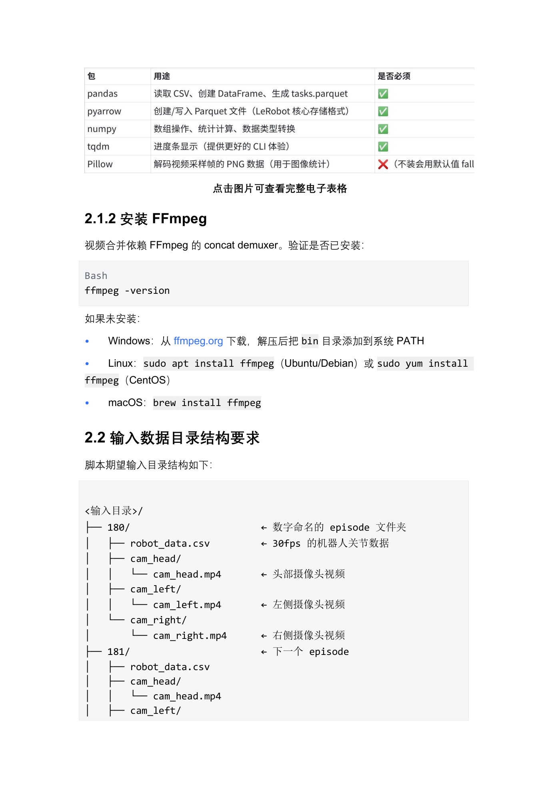
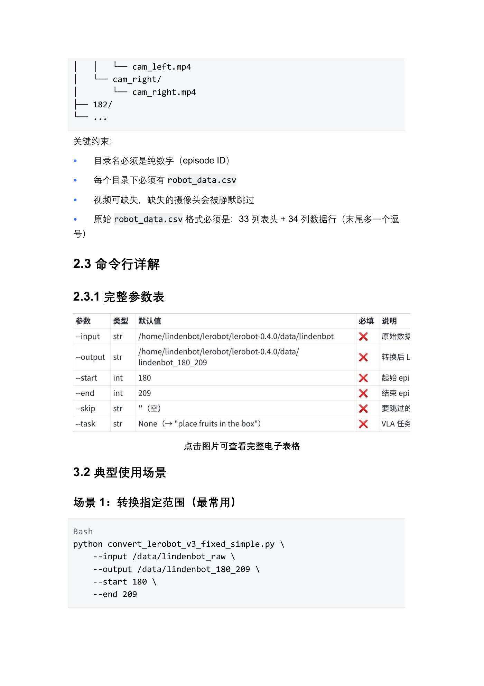
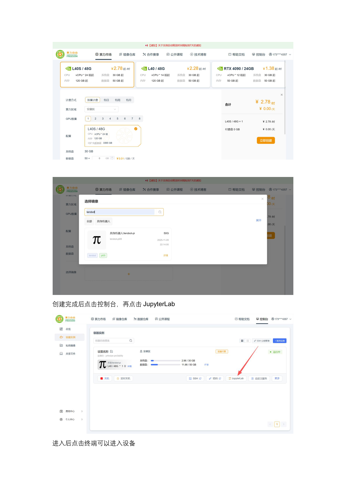
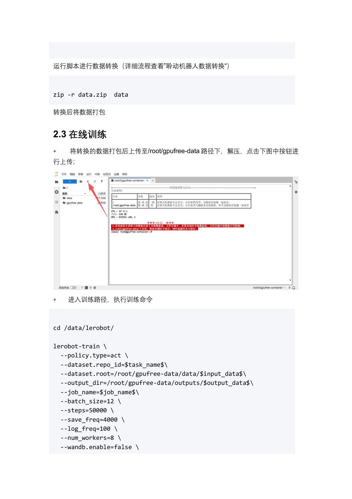

EXP-03 · 8 学时
数据转换与模型训练
把 save_data 里的编号目录转成 LeRobot v3.0 数据集，理解「帧-动作对」如何喂给 ACT 策略，再用 lerobot-train 训出家庭收纳的第一个 checkpoint。
01学习目标
- 核验采集目录契约：纯数字编号目录、每组含 robot_data.csv 与三路视频。
- 会安装转换依赖（pandas/pyarrow/numpy/tqdm/Pillow + FFmpeg）并跑通五参数转换。
- 理解训练数据的本质是「帧-动作对」，说清 ACT 常用超参各自管什么。
- 完成 lerobot-train 启动、日志判读与 checkpoint 落盘确认，会用云端训练解 OOM。
02原理：帧-动作对与 ACT 学习
转换这一步在干「对表」：采集时存下的是三路视频和一堆关节角 CSV，训练框架要的是每一帧画面配同一时刻的动作——第 t 帧图像 ↔ 第 t 拍关节角，帧帧对齐后写成 parquet + mp4 + meta 三件套，这就是 LeRobot v3.0 数据集。训练则是让 ACT 网络做题：输入画面（和历史动作块），输出接下来一串动作；对答案（loss）越对越准，权重就存成 checkpoint。
对齐粒度
视频帧率与 CSV 采样必须对得上（家庭案例 30fps），错位即全废。
ACT 特点
Action Chunking：一次预测一串后续动作，再分拍执行，动作更平滑不抖。
loss 怎么看
总体下降即在学；突然爆麦多半是 OOM 或学习率过大，回参数表排查。
checkpoint
按 save_freq 周期落盘，推理只认最终可用的那个目录（EXP-04 会用）。
生活化类比：转换好比把「错位的字幕和视频」重新压制成强制对齐的版本——画面播到哪句，字幕正好是哪句；训练则是让学员听写这盘带子几十遍，直到能不看字幕跟读。
03硬件与环境
本地路线
LDT-01 一体机 RTX 4060 Ti 16GB + 64GB RAM，控制 batch_size 防 OOM。
云端路线
gpufree 算力市场租 L40S 48G（约 ¥2.78/时），选 lenovo0「具身机器人_lindenbot」镜像。
软件环境
LeRobot 0.4.1，python=3.10，conda 虚拟环境 + CUDA 可用（nvidia-smi 验证）。
转换依赖
pandas / pyarrow / numpy / tqdm / Pillow + 系统 FFmpeg（缺 Pillow 会用默认值失败）。

ffmpeg -version 校验、输入目录中 180/robot_data.csv（30fps）与 cam_head/cam_left/cam_right 视频结构。
| 环节 | 关键参数 | 说明 |
|---|---|---|
| 输入目录 | 纯数字编号（家庭案例 180 起） | 编号即 episode ID，缺 robot_data.csv 直接报错 |
| 视频封装 | mp4 30fps（家庭案例） | 某路相机可缺省，但目录结构要符合文档契约 |
| 训练主参数 | batch_size=12 · steps=50000 · save_freq=4000 | 本地起步值；复盘口径建议练到 500000 步以上 |
| 日志参数 | log_freq=100 · num_workers=8 · wandb.enable=false | 无网环境关 wandb，loss 每 100 步打一行 |
04操作步骤：转换 → 训练
1环境准备
conda 建 python3.10 环境 → 装 LeRobot 0.4.1 → nvidia-smi 确认 CUDA
conda 建 python3.10 环境 → 装 LeRobot 0.4.1 → nvidia-smi 确认 CUDA
→
2转换数据
修目录/依赖 → 五参数 convert_lerobot_v3_fixed_simple.py → 核对 meta 三件套
修目录/依赖 → 五参数 convert_lerobot_v3_fixed_simple.py → 核对 meta 三件套
→
3启动训练
lerobot-train --policy.type=act + 数据根目录 + 超参 → 观察 loss 曲线
lerobot-train --policy.type=act + 数据根目录 + 超参 → 观察 loss 曲线
→
4落盘核验
outputs/<repo_id> 目录出现 checkpoint → 记录路径交接 EXP-04
outputs/<repo_id> 目录出现 checkpoint → 记录路径交接 EXP-04


zip -r data.zip data 打包，上传至 /root/gpufree-data 解压，进入训练路径执行 lerobot-train（--policy.type=act、batch_size=12、steps=50000、save_freq=4000、log_freq=100、num_workers=8、wandb.enable=false）。- 先验数据再训练：转换后抽查 info/stats/tasks 三件套与样例 parquet，坏数据训练只是浪费卡时。
- 本地小步走：4060 Ti 上从默认超参起步，遇 OOM 先降 batch_size。
- 云端大批量：打包上传 → 同一套命令换数据根路径 → 训完把 checkpoint 下载回本地。
- 留痕：保存完整训练日志与 loss 曲线截图，写清最终 steps 与 checkpoint 路径。
05关键命令
# ① 依赖与校验（02 文档） pip install pandas pyarrow numpy tqdm Pillow ffmpeg -version # ② 数据转换：编号目录 → LeRobot v3.0（场景一：指定范围） python convert_lerobot_v3_fixed_simple.py \ --input /data/lindenbot_raw \ --output /data/lindenbot_180_209 \ --start 180 --end 209 # ③ 本地训练（摘自案例-家庭场景） lerobot-train --policy.type=act \ --dataset.repo_id=lindenbot/put_fruit_in_box \ --dataset.root=/home/lindenbot/converted_data \ --job_name="place fruits in the box" \ --batch_size=12 --steps=50000 --save_freq=4000 # ④ 云端训练（03 文档，路径换为 /root/gpufree-data） lerobot-train --policy.type=act \ --dataset.repo_id=$task_name$ \ --dataset.root=/root/gpufree-data/data/$input_data$ \ --output_dir=/root/gpufree-data/outputs/$output_data$ \ --job_name=$job_name$ --batch_size=12 --steps=50000 \ --save_freq=4000 --log_freq=100 --num_workers=8 --wandb.enable=false
两个根目录别搞混：
--dataset.root 指向转换产物（读数据），--output_dir 指向训练产物（写 checkpoint）；混用会「读不到数据」或把模型写丢。家庭案例复盘参照 500000 步以上 的经验值，课堂 50000 步先跑通全流程。06动画：帧-动作对的对齐与成批
动画：扫描框逐拍对齐上下两条轨道（画面帧 ↔ CSV 动作行），配好的对子沿轨道汇入右侧 v3.0 数据集容器——帧与动作错一格都不行。
观察如果视频是 30fps、CSV 却按 50Hz 存，两条轨道的「拍数」对不上——这就是转换脚本要按帧率重采样对齐的原因；对不齐时宁可重转，也别让模型学错位映射。
07互动：ACT 超参选择题
情境选超参：三条实操情境，选择对应的关键旋钮
情境 1 · 本地 4060 Ti 报 CUDA OOM，先调哪个？
情境 2 · 训练太慢，想每步更快出结果？
情境 3 · 把家庭任务和别的任务混着练？
三题都选好后点「提交答案」……
要点复述：OOM 先砍 batch_size；提速优先提 batch_size（显存换吞吐），日志/加载参数别乱动当主力；任务隔离靠 repo_id + job_name，混数据会互相污染示范分布。
08常见问题
Q 转换报「找不到 robot_data.csv」？
检查编号目录里是否完整，CSV 表头需 33 列、数据行 34 列的契约（02 文档）。
Q 转换报视频/FFmpeg 错？
ffmpeg -version 先验证；Pillow 未装会用默认值导致失败——依赖表逐项补齐。
Q 训练 loss 不降？
先验数据：抽查转换产物帧-动作是否对齐、任务名/描述是否写入 tasks；再回超参。
Q 本地还是云端？
数据量小选本地省事；大批量或反复调参上 gpufree L40S，训完把 checkpoint 拉回本地。
09拓展阅读
- 《02-聆动机器人数据转换》：三场景切法（指定范围/连续段/剔坏组）与输出目录详解。
- 《03-聆动机器人数据训练》：Conda/CUDA 环境搭建、OOM 排查清单与云端训练全流程。
- LeRobot v3.0 数据集规范：data/videos/meta 目录布局与 info/tasks/stats 三件套字段。
- ACT 论文精读：VAE 重构 + 动作块（chunk）预测为什么适合双臂长程任务。
10思考题 · 自测
✅ 完成成果
产出一份转换通过的 v3.0 数据集 + 一段完整训练日志 + 至少一个 checkpoint。
🧠 原理收获
用自己的话解释「帧-动作对」，并说明帧率错位为什么是致命伤。
🛠 技能收获
独立完成五参数转换与 lerobot-train 启动，能读懂 loss 与 steps 打印。
📐 评分速览
转换产物 30% + 训练产物 40% + 超参/排错论述 30%。
思考 1为什么课堂只跑 50000 步、案例复盘却要求 500000 步以上？50000 步的模型预期能到什么水平（提示：动作像不像 vs 稳不稳）。
思考 2如果 200 组数据里混入 20 组打滑的坏组没剔，loss 曲线可能照样「好看」——这会在哪个实验阶段暴雷？（提示：EXP-04 的真机表现。）